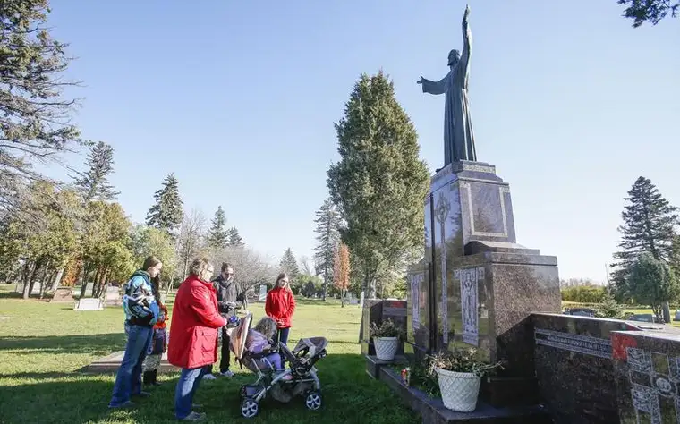

FARGO — The year before her death on Nov. 14, 2020, Dorothy Orts was busy with a revitalization project to liven up the cemetery at St. Bernard’s Catholic Church in Oriska, N.D.
“Mom had spearheaded this fundraiser for the cemetery,” her daughter Alexa Johnson shares. “She’d gotten the brick work in, got the big Christ statue repaired, and planned to have a celebration with Mass out at the cemetery with lunch afterward.”
Discussing these plans, Orts suggested they wait until spring. “I said, ‘No, let’s do it now,’” Johnson says, and “rattled off names of some of the older people in the parish” who might not be around that long. “I knew in my heart Mom could have been one of those people.”
Now, Johnson lives with the memory of those waylaid plans and the loss of her mother at year’s end. “Tomorrow is promised to no one,” she says. “You gotta be ready.”
This propelled her recently to invite friends from a private Facebook group of area faithful to pray for the deceased each afternoon the week of Nov. 1-8 at Holy Cross Cemetery in north Fargo. Johnson showed up all but one of the days, due to family illness, bringing a few of her six children, ages 4 to 14, along with her Rosary beads, a Requiem prayer and list of deceased whose living loved ones had requested prayers.

Praying for the dead
Though not all Christians embrace the practice of praying for the dead, the long-held tradition springs from Judaism, and Biblically, according to the Rev. Jayson Miller, is most notably referenced in Maccabees 12:43-46:
“…for if (Judas) were not expecting the fallen to rise again, it would have been superfluous and foolish to pray for the dead. But if he did this with a view to the splendid reward that awaits those who had gone to rest in godliness, it was a holy and pious thought. Thus, he made atonement for the dead that they might be absolved from their sin.”

The New Testament references the Church’s teaching on purgatory in 1 Cor. 3:11-15, Miller adds, pointing to the need to pray for holy souls — those departed but not yet witnessing the Beatific Vision due to the residual effects of sin. “Just as we would ask people to pray for us on earth, we pray for people who have left this earth and are no longer here, but whose life continues on in a different state.”
Since nothing perfect enters the presence of God, he notes, we must be purified before meeting God. St. Paul mentions this purifying fire, which the Church calls “purgatory.” Though a mercy of God, purgatory isn’t pleasant, Miller adds, heightening our need to pray for souls there, since they cannot pray for themselves. “It’s an act of love and charity.”
These souls, he clarifies, have chosen God, a choice made at death, yet God, wanting us to fulfill our highest potential, allows purgatory “that we might reach the splendor of heaven by his grace.”

‘Flowers can’t pray’
Johnson says her mother’s father died relatively young, causing an attentiveness toward those who’d left this world.
“We were taken to funerals incessantly as children,” she says. “It blew my mind in college when I started meeting 19-year-olds who’d never been to a funeral,” and who “seemed paralyzed at the sight of a casket.”
By age 5, Johnson figures she’d been to 30 or more funerals. She considers this a blessing that has given her a healthy perspective of death.
“We run around in this sanitized world (avoiding death), but reality is what’s really spooky,” she says. Being introduced to death healthily, she adds, can help us learn not to fear it, but be hopeful in it.

Contrarily, Johnson says she knows of some Christians who use mediums to try to contact their dead relatives, which is unnecessary. “I know exactly what my mom wanted us to do for her (in death),” Johnson adds. “To take our kids to church and pray for her.”
The practice helps the souls of the deceased, “but there’s this secondary impact, where it also turns into a really wonderful coping mechanism for the living,” she says. “It flies in the face of Christian reasoning — we’re told to pray without ceasing — that the minute somebody dies, we just stop praying for them.”

Johnson recalls fondly what the now-deceased Fargo priest the Rev. Peter Hughes once said: “Don’t send flowers to my funeral. I’ve never seen a flower pray a Hail Mary.”
The Rev. Mr. James Hunt, a deacon at St. Philip’s in Hankinson, N.D., would agree.
“I tell my kids, ‘God forbid that you should have people donating to some cause at my funeral. When I die, the thing that I want most from you is your prayers and for you to have Masses said for my soul.’”
If not, he tells them jokingly, “I will come back to haunt you.”

Relationships, love remain
Like Johnson, Hunt learned about praying “for the poor souls” from his mother as a child. “On All Souls Day especially, she would take us to church,” and there, she and her 17 children would pray for the deceased.
“Mom was the rock of faith that kept everything together and tried to herd us in the right direction,” he says, and though she died in her late 50s, he feels her near. “She promised she’d always pray for us; she wore out so many (Rosary) beads on us.”

When Hunt’s son Sean died from drowning at age 19 in 2007, he followed his mother’s lead, and has not missed a year, especially in November, praying at his grave.
“Some of my best memories since he died have been at the cemetery,” Hunt says. Though his wife, Valerie, lives with effects of a stroke and can’t always accompany him, he adds, when she does, they experience a closeness with their son and each other that is unparalleled.
“We feel a very deep closeness with him always, but especially there where his bodily remains are — the last place I saw him,” he says.
“When they closed his casket in the church, I kissed his forehead, just to feel that softness of his hair and the touch of his skin, to have it emblazoned in my mind,” he adds. “I rested my hand on (the casket) as they started to lower it.”
He holds onto that moment, along with those from road trips Sean accompanied him on when he was driving truck.
“God was loading me up with good memories,” he says. “I go there with all that in my heart.”

November makes sense as a time for the Church to remember the dead, Hunt says. “We are just completing the harvest. The leaves are falling off the trees. We’re reminded of death and its approach, and it’s a fitting time of year to have this in our minds,” he says. “In fact, it’s very natural.”
He not only reflects on his loved ones’ lives, but others’. “I look around at the graves. I see all kinds of people I know; those I sang in the choir with, children who died at an early age, a young gal killed in a car accident,” he says. “You see them, and you feel this closeness to all of them, and the need to pray for them.”
The Church, he adds, “almost begs us to pray for each other throughout our lives, and after death, and it’s a gift to be able to do so.”
Hunt believes that when he dies, those for whom he’s prayed will be first to greet him in the afterlife.
“I’m trying to arouse as large a company as I possibly can to greet me when I leave this world,” he says. “The Church not only teaches these things, but they’re confirmed in Scripture and in reason. It just all makes sense.”
[For the sake of having a repository for my newspaper columns and articles, I reprint them here, with permission, a week after their run date. The preceding ran in The Forum newspaper on Nov. 12 2021.]